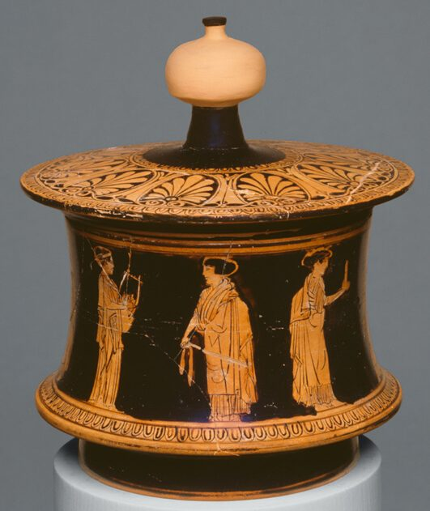
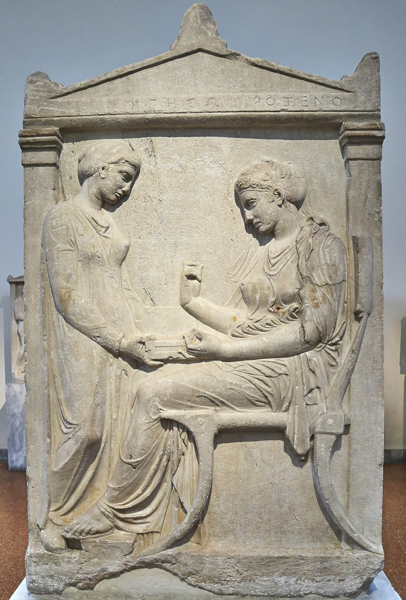
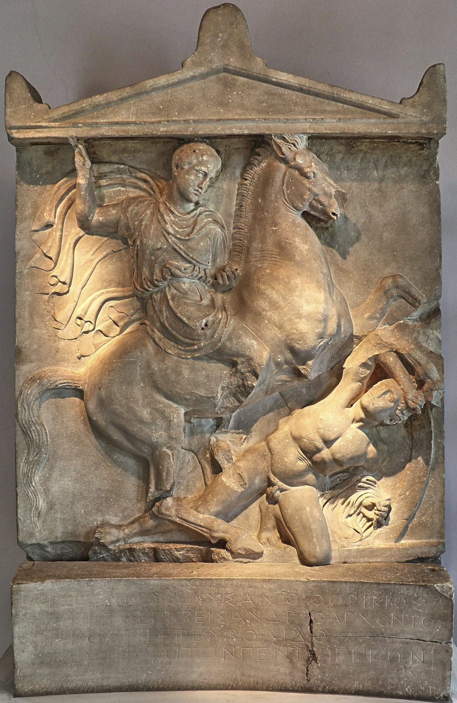

Unit 7 · Women in ancient Greece · Lesson 5
Masculinity and femininity in stone and paint
Two grave stelai and two painted vases from Classical Athens: what do they show a man and a woman should be, and how do the depictions compare?
Year 11 Ancient History · Present with → or space · Read on a phone with R

Images: Art Institute of Chicago (CC0 1.0). Full details on the last slide.
Review · books closed · 6 minutes · press K for the timer
Five questions from Lessons 3–4
- What did Pericles say about the best woman, in his advice to the widows? The widows’ glory is not to fall short of their natural character, and greatest is hers “who is least talked of among the men whether for good or for bad” (Thucydides 2.45.2, as Thucydides reports him).
- How does Ischomachus divide the work of a husband and a wife? God, he says (“I think”), fitted the woman’s nature “to the indoor and man’s to the outdoor tasks and cares” (Xenophon, Oeconomicus 7.22).
- What does Medea say she would rather do than give birth once? “I would gladly take my stand in battle array three times o’er, than once give birth,” she says: childbirth is worse than battle (Euripides, Medea, Coleridge’s translation).
- In which year was Aristophanes’s Lysistrata first produced? At the start of 411 BCE (the festival is not known), in an Athenian comedy written by a man for an Athenian audience.
- Writing · which sentence accounts for an attitude? Question: “Account for Ischomachus’s attitude that a wife belongs indoors.” A · “Ischomachus tells his wife to stay indoors because Athenian men of his day were sexist and wanted to control women.” B · “Ischomachus tells his wife to stay indoors, but he also describes his house, his stores and the servants who work for him.” C · “Ischomachus tells his wife to stay indoors because the dialogue is about running a wealthy estate, and the wife has a part in it.” D · “Ischomachus tells his wife to stay indoors, so every Athenian wife of his day must have stayed in the house all day.” C. Account for asks for reasons (NESA: ‘state reasons for, report on.’), and C gives one from the writer’s context. A is a modern judgement; B adds a point but gives no reason; D draws a conclusion about every wife from one speaker.
Mark your own answers in a different colour. Which question did you find hardest?
Learning intentions and success criteria · 2 minutes
Today’s goals
- analyse how masculinity and femininity are depicted in Athenian funerary art and vase painting
- compare and contrast the two depictions
- describe what each stele shows and says
- explain the ideal of a man and of a woman each depiction presents
- write a comparison answer with whereas and both
Syllabus outcomes: AH-11-04 accounts for the different perspectives of individuals and groups in their historical context · AH-11-05 analyses different types of sources for evidence to support a historical account or argument · AH-11-07 communicates historical understanding, applying historical knowledge, terms and concepts. Life Skills: AH-LS-05 describes features of places or societies in the ancient world · AH-LS-11 communicates information about the past using historical terms and concepts.
Note-making · the routine for the whole course
How to structure your notes
questions and key terms, written after
short phrases, arrows (→ leads to), abbreviations (c. = about; BCE = Before the Common Era)
- 1A new page for each lessonA cue column about a quarter of the page wide; title and date at the top; room for a summary at the bottom.
- 2Listen and look, then writeDon’t copy while a slide is being explained. Phrases, not sentences; a source for every claim.
- 3Write your own notes at the ✎ checkpointThen compare with the model notes, one row at a time. Add what you missed in a second colour.
- 4Write the cue questions afterwardsUse exam verbs: describe, explain, compare, contrast. To revise, cover your notes and answer the cues.
- 5Finish with a three-sentence summaryOne checkpoint today: the two stelai and the two vases.
Key vocabulary · add to the unit word wall
Words for monuments, ideals and comparing
| Writing terms | Meaning |
|---|---|
| Contrast | ‘Show how things are different or opposite.’ (NESA) — Differences only, point by point. |
| Compare | ‘Show how things are similar or different.’ (NESA) — Similarities and differences, then which matters most. |
| Added today | Meaning |
| Ideal | What a writer, artist or family presents a person as being or doing, which may differ from how people actually lived. |
| Content terms | Meaning |
|---|---|
| Stele (plural stelai) | An upright stone slab, often a grave marker with a relief and an inscription. |
| Pyxis / lebes gamikos | A lidded box for cosmetics or jewellery / a wedding vessel; both often painted with women’s scenes. |
| Added today | Meaning |
| Relief | A carving that stands out from a flat background, as on a grave stele. |
| Masculinity / femininity | The qualities and roles a society expects of men / of women, as shown in its words and its art. |
1 · Two grave monuments · We do — See – Think – Wonder · 6 minutes · press K for the timer
Look closely. What is being shown, and why?


only what is really there
two upright marble slabs with triangular tops and writing carved on them · a seated woman and a standing woman holding a box · a young man on a rearing horse above a man on the ground · long robes on the women; a short tunic and a cloak flying behind the horseman
what it might mean, and how sure you are
both are grave markers (fairly sure: the shape and the writing) · the horseman is a soldier and is winning (fairly sure) · the seated woman is rich (a guess: the chair and the attendant) · the standing figure is a servant (a guess: she waits on the seated woman)
questions you want answered
Who are they, and who paid for them? · Is the horseman a real soldier? · What is in the box? · What does the writing say?
Images: George E. Koronaios (CC BY-SA 4.0) · George E. Koronaios (CC BY-SA 4.0). Full details on the last slide.
1 · Two grave monuments · We do — the reveal: names, dates and inscriptions
Two family grave monuments from the Kerameikos, Athens
According to the inscription on the epistyle, the deceased is Hegeso, daughter of Proxenos.
The museum’s gallery label, as transcribed on Wikimedia Commons · found west of Athens, in the ancient cemetery of Kerameikos · marble · about 410–400 BCE
- Shows: a seated woman looking at an object held in her raised hand, which the museum says was “originally rendered in paint”, and a standing attendant holding an open box
- Says: her name and her father’s, and nothing else
Dexileos son of Lysanias of Thorikos. He was born in the archonship of Teisandros (414/3); he died in that of Euboulides (394/3), at Corinth, one of the five cavalrymen.
Inscription on the base · trans. S. Lambert, F. Schuddeboom and R. Osborne, Attic Inscriptions Online (CC BY-SA 3.0) · he died in 394/3 BCE; the museum dates the relief about 390 BCE
- Shows: “a mounted warrior striking a fallen enemy”, above the inscription (Attic Inscriptions Online)
- Set up by: his relatives, says the museum, in the place where the family grave enclosure was later built
Words: archonship the year named after one of Athens’s chief officials, the archon · cavalryman a soldier who fights on horseback · Thorikos a village in Attica, the land around Athens · Kerameikos the cemetery of ancient Athens
Cold call: what do the two inscriptions have in common?
Both name the person through a father: Proxenos and Lysanias. Dexileos’s also gives his village, and the archon years of his birth and death, which Attic Inscriptions Online calls “very unusual in Athenian commemorative practice”; Hegeso’s gives only her name and her father’s.
2 · What each monument says · I do — think aloud: what does it say a good man was, and who chose the picture?
A cavalryman killed at Corinth, shown striking a fallen enemy
Images: George E. Koronaios (CC BY-SA 4.0). Full details on the last slide.
- 1What does it show?A young horseman, his cloak flying, strikes a fallen opponent. The weapons and reins, “made of bronze and attached in ancient times”, are now missing (museum label).
- 2What does it say a good man was?An Athenian cavalryman: active, winning, in the service of his city. The inscription calls him “one of the five cavalrymen”, though what “the five” means is unclear (Attic Inscriptions Online).
- 3Who chose the picture?Probably his family: the museum says it was “dedicated by his relatives” in the place where the family grave enclosure was later built. The city honoured him too: the museum says his ashes were placed in the public burial ground, and his name is on the public list of cavalrymen who fell (Attic Inscriptions Online).
Cold call: he died at Corinth. Why would his family show him winning?
A family chooses the picture. This one presents a young cavalryman as active and victorious, not as a man who was killed. So it is probably an ideal of a man, not a record of what happened to him.
2 · What each monument says · I do — think aloud: what does it say a good woman was, and why is she named through her father?
A seated woman, her attendant and a box: probably jewellery
Images: George E. Koronaios (CC BY-SA 4.0). Full details on the last slide.
- 1What does it show, and what is in the box?A woman on a chair with a footstool looks at an object in her raised hand; an attendant holds an open box. The object was “originally rendered in paint” and the paint has gone, so “jewellery” is the museum’s reading: probably jewellery.
- 2What does it say a good woman was?Still, quiet and adorned, with an attendant to wait on her, probably at home (the chair and the attendant suggest a household): being looked after, not acting. The museum reads her “imposing appearance” and “the magnificence of the family grave plot” as signs of her “noble origin”.
- 3Why is she named through her father, and who chose?The inscription gives “Hegeso, daughter of Proxenos”: the usual way to name an Athenian, as with “Dexileos son of Lysanias”, tying her to her father’s family. It says nothing about a husband, and the label doesn’t say whether she was married. Probably her family chose the picture and the wording, as the family grave plot suggests.
Cold call: Pericles said the best woman is “least talked of among the men”. Her family named and showed Hegeso. Does the stele contradict him?
Not simply. The stele shows her still and quiet, attended and adorned, not acting. But her family chose to name her and to show her to everyone passing the cemetery, so it only partly fits Pericles’s ideal. It is a family’s picture of an ideal woman.
2 · What each monument says · I do — complete the comparison grid in your booklet
The comparison grid: what each stele shows and says
| Feature | Dexileos stele | Hegeso stele |
|---|---|---|
| Pose | on a rearing horse, leaning forward over a fallen man | seated on a chair with a footstool, looking at her raised hand |
| Action | strikes a fallen opponent | looks at an object in her hand while an attendant holds the box; she does nothing else |
| Objects | a horse and a cloak; bronze weapons and reins, now missing | a chair, a footstool, an open box and an object in her hand, probably jewellery (once painted) |
| Setting | no background; an action scene above the inscription, set up where the family’s grave enclosure was later built | no background; a chair and an attendant suggest the household; in a family grave plot |
| Inscription | name, father (Lysanias of Thorikos), the archon years of his birth and death, “one of the five cavalrymen” | her name and her father’s (Proxenos), nothing else |
| Ideal | You decide, in your own words, in today’s writing | You decide, in your own words, in today’s writing |
The last row is your thinking: what does each depiction present a man or a woman as being?
2 · What each monument says · I do — the program’s two painted vases, in the museums’ own words
Women on painted vases: a pyxis and some wedding-vase fragments
Nine women are depicted in the figured scene that runs right around the vase. The women are presumably in the gynaikeion or women's quarters, and include a seated woman with a book roll … a woman with a mirror … a woman with a lyre …
The museum’s description (CC BY 4.0) · the photograph shows three of the nine women
The ROM has a group of painted red-figure pottery fragments from a lebes gamikos that preserves scenes of women preparing two brides for their big day. The fragments are attributed to the Washing Painter, active in Athens around 420 BCE.
Aphrodite and Paitho embracing behind a seated bride as Eros flies above.
Paul Denis, Assistant Curator, “A Greek Wedding”, ROM Magazine, 29 September 2021 (the last line is a picture caption) · no photograph here: the ROM’s page has no open licence (link on the credits slide)
Cold call: which words in these descriptions are hedges, and why do they matter?
“Presumably” (the museum can’t be sure where the scene is set), “attributed” (the painter’s name is a scholar’s judgement) and “around” (the date is approximate). They separate what we can see, the objects and figures, from what the museums infer.
Notes checkpoint 1 of 1
Two stelai and two vases: what each shows and says
3 · You do · Writing focus · 7 minutes · I do → We do → apply
Writing focus: compare and contrast with whereas and both
Contrast: ‘Show how things are different or opposite.’ Compare: ‘Show how things are similar or different.’ NESA, Glossary of key words So (department advice): contrast = differences only; compare = similarities and differences, then which matters most. Whereas marks a difference; both marks a likeness.
Worked example · written for this lesson · on the two vases, not the stelai
Judge The two vases are alike in showing femininity as adornment among women, but they differ in what the women are doing.
Differ Whereas the Art Institute describes nine women on the pyxis, presumably in the women’s quarters, with a mirror, a lyre and a book roll, the Royal Ontario Museum says its fragments show women preparing two brides, with Aphrodite and Paitho among the figures.
Alike Both present a woman’s world as adornment and the company of other women, through a mirror on the pyxis and jewellery offered to a bride on the fragments.
Matters most Of these, the likeness matters more, because both are painters’ pictures of women among women, with the things of adornment, so they probably show an ideal of femininity, not the whole of women’s lives.
Euripides, Medea (trans. Coleridge), from Lesson 4: “And yet they say we live secure at home, while they are at the wars … I would gladly take my stand in battle array three times o’er, than once give birth.” In pairs, write one sentence that contrasts what the men say with what Medea says. Start with Whereas or Unlike; then cold call.
Whereas Whereas the men say that women “live secure at home” while they fight, Medea says, “I would gladly take my stand in battle array three times o’er, than once give birth”.
Unlike Unlike the men who say that women live secure at home, Medea ranks childbirth as worse than battle.
Not a contrast: “Both Medea and the men talk about danger.” That is a likeness, and contrast asks for differences only.
Write the first sentence of your answer on the two stelai: your judgement of the main similarity or difference. “Whereas …, …; both …” Your Writing toolkit (booklet pages 3–4): connectives by function.
3 · You do · 19 minutes in all · deconstruct the question first
Your comparison answer: deconstruct it first
Compare the depictions of masculinity and femininity on the stelai of Dexileos and Hegeso. 6 marks
Deconstruct it: what does this question ask you to do?
| Step | This question |
|---|---|
| Verb | Compare: ‘Show how things are similar or different.’ (NESA). Give similarities and differences, then say which matters most (department advice) |
| Topic | how each stele depicts masculinity and femininity: what it presents a man and a woman as being and doing |
| Limits | two monuments only: the Dexileos stele and the Hegeso stele, what each shows and says; “depictions” means what each presents, so hedge what you infer |
| Do | a developed paragraph for 6 marks (department advice): your judgement of the main similarity or difference; point by point, with evidence from each stele joined by whereas and both; end with which matters most |
Check first: if the question said contrast instead of compare, what would change?
You would give differences only. Compare also asks for similarities, and for which matters most.
3 · You do · writing 12 minutes · then check it · press K for the timer
Write your comparison answer
Compare the depictions of masculinity and femininity on the stelai of Dexileos and Hegeso. 6 marks
- Open with your judgement: the main similarity or the main difference between the two depictions.
- Go point by point (pose, action, objects, inscription): evidence from each stele, joined by whereas and both.
- Hedge what you infer (probably, suggests), and name each stele.
- End with which matters most.
Assess how far funerary art can show what Athenians thought about men and women, rather than what families wanted remembered.
Use your comparison grid and Notes 1. Word bank:
Frame: “Whereas …, …; both …” The worked example on the Writing focus card shows the shape.
3 · You do · after you write · compare yours with a model
A model comparison answer: the two stelai
The two stelai probably present ideals chosen by families rather than portraits, but they differ sharply in what that ideal is for a man and for a woman. Whereas the Dexileos relief shows a young cavalryman in action, striking a fallen opponent, the Hegeso relief shows a woman seated and still, looking at an object, probably jewellery, in her raised hand while an attendant holds the box. The man is placed in war, as ‘one of the five cavalrymen’; the woman, it seems, in the household, adorned and attended. Both inscriptions name the person through a father, Lysanias and Proxenos, and both monuments belong, the museums say, to family grave plots. Of these, the difference matters most, because Dexileos is shown winning although his inscription says that he died at Corinth, which suggests that a family chose to present masculinity as action and war, and femininity as stillness, adornment and the household.
Finish your notes If time · or at home
Summary: three sentences
- What does each stele show and say?
- What do the two painted vases add?
- Why are these ideals chosen by families and painters, not portraits?
The Dexileos stele shows a young cavalryman striking a fallen enemy and names him through his father, Lysanias; the Hegeso stele shows a seated woman, an attendant and a box, probably of jewellery, and names her through her father, Proxenos. The Chicago pyxis and the ROM fragments, as their museums describe them, show women together, adorned, and brides being prepared. All four are chosen images, probably an ideal of a man in war and of a woman at home, so they show what families and painters wanted shown rather than how people lived or died.
Check for understanding · hinge question · hold up your A, B, C or D card on “3, 2, 1, show”
Which statement about the two stelai is best supported by the evidence?
- ABoth show the dead person in action
- BBoth show ideals chosen by families
- COnly Hegeso’s inscription names a father
- DOnly Dexileos’s stele is a grave monument
Dexileos’s relief was “dedicated by his relatives”, and the Hegeso stele belongs to a family grave plot; Dexileos is shown winning although his inscription says that he died at Corinth. A is wrong: Hegeso is seated and still, not in action. C is wrong: both inscriptions name a father, Proxenos and Lysanias. D is wrong: both are funerary monuments in the Kerameikos (Dexileos’s, the museum says, is a family memorial; his ashes were placed in the public burial ground).
Exit ticket · 4 minutes · before you leave
One difference and one similarity
Images: George E. Koronaios (CC BY-SA 4.0) · George E. Koronaios (CC BY-SA 4.0). Full details on the last slide.
Write one difference and one similarity between the stelai of Dexileos and Hegeso.
Difference: action and war against stillness and adornment: a horseman striking a fallen opponent, against a seated woman with an attendant and a box. Similarity: both probably present an ideal chosen by the family, not a portrait, and both inscriptions name the father. Not “both are just gravestones”: that is true but says nothing about masculinity and femininity.
Then check yourself against today’s three “I can” statements. Next lesson: wife, mother, heiress: women in the Athenian family.
Practice and review · 1 of 4 · true, false, justify
True or false? Justify your answer
- 1The Hegeso stele was found in the Kerameikos, a cemetery of Athens. True — the museum’s label says “Found west of Athens, in the ancient cemetery of Kerameikos”.
- 2The inscription on the Dexileos stele gives only his name. False — it also gives his father, Lysanias, his village, Thorikos, the archon years of his birth and death, and “one of the five cavalrymen”.
- 3The relief on the Dexileos stele shows how he died. False — the inscription says that he died at Corinth, but the relief shows a horseman striking a fallen opponent: a chosen image, probably an ideal, not a record of his death.
- 4The museum says the object Hegeso looks at was originally painted on the stone. True — it was “originally rendered in paint”; the paint has gone, so “jewellery” is the museum’s reading: probably jewellery.
- 5Compare means show only how things are similar. False — NESA: ‘Show how things are similar or different.’ Contrast is the verb for differences only.
- 6The Royal Ontario Museum says its lebes gamikos fragments show women preparing two brides. True — “scenes of women preparing two brides”, attributed to the Washing Painter, who was active around 420 BCE; the museum’s hedges are “attributed” and “around”.
Practice and review · 2 of 4 · writing · whereas and both
Fix the sentence, then deconstruct a new question
- “The pyxis and the lebes gamikos are both vases.” A likeness that says nothing about femininity, the topic. “Both present a woman’s world as adornment and the company of other women: a mirror on the pyxis, jewellery offered to a bride on the fragments.”
- “Whereas the pyxis shows women, the fragments show women.” The whereas has no difference on either side. “Whereas the pyxis shows nine women, presumably in the women’s quarters, the fragments show women preparing two brides.”
- “The pyxis shows what Athenian women were really like at home.” It overclaims and drops the hedge: a painter’s picture is not a record of how women lived. “The pyxis, as the museum describes it, shows nine women, presumably in the women’s quarters; it presents a painter’s picture of women, not how they lived.”
- Exercise 2 · deconstruct: “Contrast the inscriptions on the stelai of Dexileos and Hegeso. (4 marks)” What is the verb, the topic, the limits, and what must the answer do? Verb: contrast, ‘Show how things are different or opposite.’ (NESA). Topic: what each inscription says. Limits: the two inscriptions only, not the reliefs. Do: differences only, point by point, with whereas or unlike; three to five sentences for 4 marks (department advice).
Practice and review · 3 of 4 · extension · assess
What Athenians thought, or what families wanted remembered?
Assess how far funerary art can show what Athenians thought about men and women, rather than what families wanted remembered.
Use both stelai. Shape: Judge → Evidence → Analyse → Evaluate → Resolve, with the same degree in the Judge and the Resolve.
Assess: ‘Make a judgement of value, quality, outcomes, results or size.’ NESA, Glossary of key words
Funerary art can show only to a limited extent what Athenians thought about men and women, because it shows chiefly what families wanted remembered. The Dexileos relief shows a young cavalryman striking a fallen opponent although his inscription says that he died at Corinth, and the museum says that his relatives dedicated it, so it presents the man his family chose to remember. The Hegeso stele belongs to a family grave plot, and the museum reads her appearance and the plot as signs of noble origin, which suggests that it presents one family’s ideal of a woman, not women in general. Yet families chose images that passers-by would recognise, and the two stelai agree with the painted vases, which the museums describe as women together, with mirrors and jewellery, and brides being prepared, so the monuments probably also reflect ideas that many wealthy Athenians shared. On balance, funerary art can show only to a limited extent what Athenians thought, because every image was chosen by a family, although its shared patterns suggest an ideal recognised more widely.
Practice and review · 4 of 4 · cover your notes and answer from memory
Quick checks
- What does the Dexileos stele show and say? A young cavalryman striking a fallen opponent; the inscription names Dexileos son of Lysanias of Thorikos, born in 414/3 BCE and dead in 394/3 BCE at Corinth, “one of the five cavalrymen”. His relatives dedicated it.
- What does the Hegeso stele show and say? A seated woman looking at an object in her raised hand, probably jewellery that was painted, and a standing attendant holding an open box; the inscription names Hegeso, daughter of Proxenos. It belongs to a family grave plot, about 410–400 BCE.
- What do the pyxis and the ROM fragments show, and how sure are the museums? The pyxis: nine women, “presumably” in the women’s quarters, with a mirror, a lyre and a book roll (430–420 BCE). The fragments: women preparing two brides, with Aphrodite and Paitho, “attributed” to the Washing Painter, “around” 420 BCE.
- Why are the stelai better described as ideals than as portraits? Families probably chose the image: Dexileos’s relatives dedicated his, and it shows him winning although his inscription says that he died at Corinth; Hegeso, in a family grave plot, is shown still and adorned, with nothing she did. So they show what a family wanted remembered, not what each person was like.
- What does each of compare and contrast ask for? NESA: compare is ‘Show how things are similar or different.’ and contrast is ‘Show how things are different or opposite.’ So compare gives likenesses and differences, then which matters most; contrast gives differences only.
- What do whereas and both do in a comparison answer? Whereas sets a difference side by side, with evidence from each; both names a likeness, again with evidence from each.
Sources and credits
Where everything comes from
Thucydides 2.45.2: trans. R. Crawley (Dent, 1910; public domain), Perseus Digital Library (CC BY-SA 3.0 US). Xenophon, Oeconomicus 7.22: trans. E. C. Marchant (Loeb, 1923), Perseus Digital Library. Euripides, Medea: trans. E. P. Coleridge, The Plays of Euripides I (Bell, 1891; public domain), archive.org. Aristophanes, Lysistrata, translator’s introduction (review answer): B. B. Rogers (Loeb, 1924; public domain), archive.org.
Dexileos: Attic Inscriptions Online, IG II² 6217, translation by S. Lambert, F. Schuddeboom and R. Osborne (CC BY-SA 3.0); the Kerameikos Museum’s label for P 1130 and the National Archaeological Museum’s gallery label for 3624, as transcribed on Wikimedia Commons with the photographs credited below (the Dexileos and Hegeso pages). Hegeso: Museum of Classical Archaeology, University of Cambridge, cast record.
_at_the_Archaeological_Museum_of_Kerameikos_on_27_June_2018.jpg){kind=link}
_at_the_National_Archaeological_Museum_on_3_April_2018.jpg){kind=link}
Vases: Art Institute of Chicago, pyxis 1892.126a-b (the museum’s description is licensed CC BY 4.0). Royal Ontario Museum, Paul Denis, “A Greek Wedding”, ROM Magazine, 29 September 2021, rom.on.ca (© Royal Ontario Museum; quoted briefly for study, and the ROM’s photographs are not reproduced here: open the page to see the fragments).
Outcomes and content: NSW Education Standards Authority (NESA), Ancient History 11–12 Syllabus (2024). © NESA. Directive verbs: NESA, Glossary of key words.
- Red-figure pyxis with women in the household, Athens, 430–420 BCE (Art Institute of Chicago, 1892.126a-b) · Photo: Art Institute of Chicago · CC0 1.0 · source
- Grave stele of Hegeso, Athens, about 410–400 BCE (National Archaeological Museum, Athens, 3624) · Photo: George E. Koronaios · CC BY-SA 4.0 · source
- Grave stele of Dexileos, Athens, about 390 BCE (Kerameikos Museum, P 1130) · Photo: George E. Koronaios · CC BY-SA 4.0 · source
All images are public domain or openly licensed, and were resized or cropped for the web. Each is shared under the licence shown.